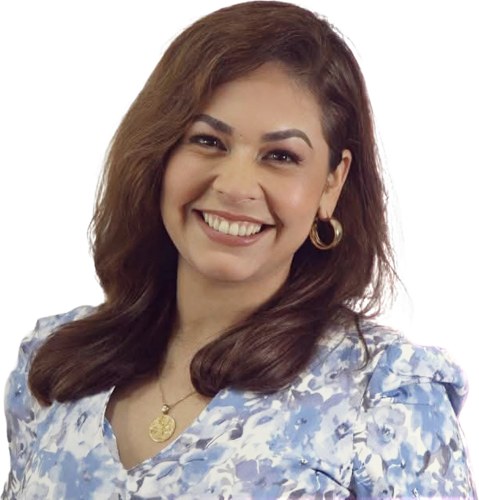
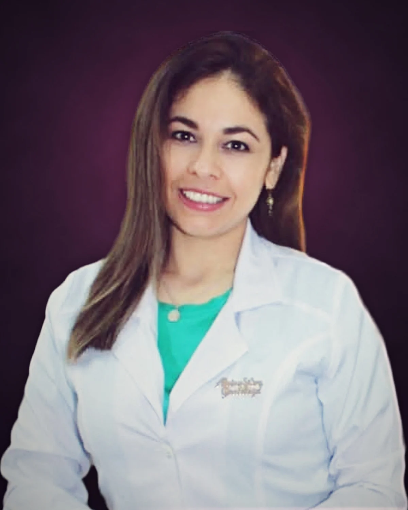

Entiende tus hormonas. Cuida tu energía.
Atención ginecológica que mira tu cuerpo completo: ciclos, metabolismo, perimenopausia, menopausia y longevidad. En Trujillo o por videoconsulta desde cualquier lugar del Perú.

Tratamientos
Todo lo que tu salud femenina necesita, en un solo lugar.
Buscamos la causa de lo que sientes y armamos un plan contigo, con exámenes y seguimiento.
Hormonas y menopausia
Sofocos, sueño, ánimo, peso y libido. Te explicamos qué pasa en tu cuerpo y cuáles son tus opciones de tratamiento.
Ginecología funcional
Ciclos irregulares, SOP, dolor menstrual y salud íntima.
Metabolismo
Resistencia a la insulina, tiroides, energía y peso.
Longevidad y antiedad
Prevención y hábitos para vivir más años con bienestar.
Ginecología regenerativa
Tratamientos para la salud íntima, siempre tras una evaluación.
Láser ginecológico
Procedimientos indicados según tu caso. Equipos por confirmar
Para cada etapa
Tu cuerpo cambia. Tu cuidado también.
Las edades son orientativas: cada mujer vive estas etapas a su ritmo.
Ciclos y equilibrio
Ciclos irregulares, SOP, dolor menstrual y anticoncepción.
Primeros cambios
Fertilidad, metabolismo y las primeras señales de la perimenopausia.
Transición
Perimenopausia y menopausia: síntomas, opciones y acompañamiento.
Longevidad
Salud ósea, cardiovascular y metabólica para vivir mejor más años.
Cómo funciona
De tu primer mensaje a un plan hecho para ti.
Una evaluación sin apuros y un seguimiento real, presencial o por videoconsulta.
Escríbenos
Por WhatsApp te hacemos un par de preguntas y te damos horarios.
Evaluación
Conversamos sobre tu historia, tus síntomas y tus exámenes.
Tu plan
Un tratamiento explicado paso a paso, con opciones y tiempos realistas.
Seguimiento
Controles para ajustar el plan según cómo responde tu cuerpo.

Sobre la Dra.
Dra. Aloisy Silva
Ginecología con enfoque funcional para mujeres que quieren entender su cuerpo y sentirse bien en cada etapa.
Su práctica se centra en la salud hormonal, la menopausia, el metabolismo y la medicina de longevidad. Atiende en CEGEMA, Trujillo, y por videoconsulta a pacientes de todo el Perú.
Formación y trayectoria por confirmar
Modalidades
En consultorio o desde tu casa.
La misma atención, en el formato que te quede mejor.
CEGEMA, Trujillo
Evaluación completa con examen y procedimientos cuando se necesitan.
- Evaluación ginecológica completa
- Procedimientos en consultorio
- Dirección y horario por confirmar
Desde cualquier lugar del Perú
Videoconsulta para revisar síntomas, exámenes y tratamientos.
- Revisión de exámenes y plan de tratamiento
- Seguimiento hormonal y metabólico
- Si necesitas examen físico, te lo decimos antes
Testimonios
Lo que cuentan sus pacientes.
Solo testimonios reales, con autorización escrita de cada paciente. Se cargan desde el panel.
Espacio para un testimonio real, autorizado por la paciente.
Nombre o iniciales · tratamientoEspacio para un testimonio real, autorizado por la paciente.
Nombre o iniciales · tratamientoEspacio para un testimonio real, autorizado por la paciente.
Nombre o iniciales · tratamientoPreguntas frecuentes
Antes de tu cita.
¿Cómo agendo mi cita?
Escríbenos por WhatsApp. Te hacemos un par de preguntas y te enviamos los horarios disponibles, presenciales o virtuales.
¿Necesito exámenes antes de la primera consulta?
No es obligatorio. Si tienes exámenes recientes, tráelos o envíalos; si hacen falta otros, la Dra. te los indicará.
¿La consulta virtual sirve para mi caso?
Sirve para revisar síntomas y exámenes y para ajustar tratamientos. Si tu caso necesita examen físico, te lo diremos antes de agendar.
¿Cuánto cuesta la consulta?
Precio y medios de pago por confirmar
Sentirte bien en cada etapa empieza con una conversación.
Escríbenos y coordinamos tu evaluación inicial, en Trujillo o por videoconsulta.